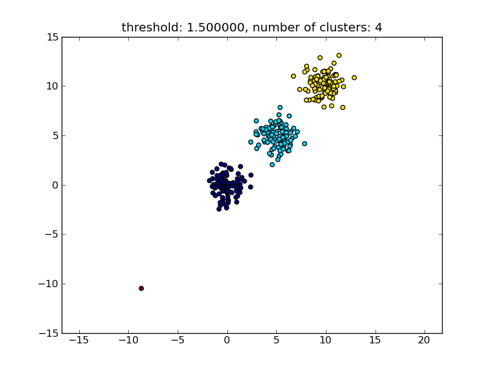
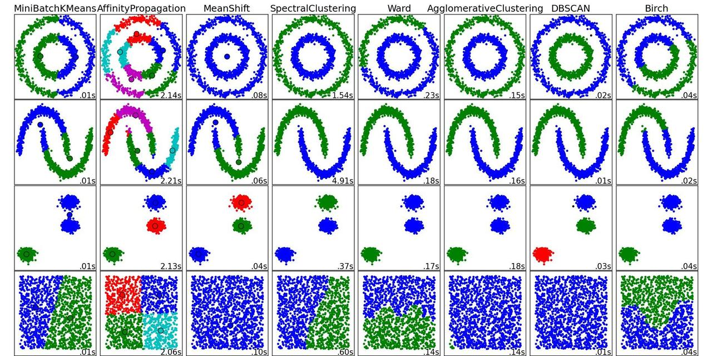

Unsupervised clustering with unknown number of clusters
I have a large set of vectors in 3 dimensions. I need to cluster these based on Euclidean distance such that all the vectors in any particular cluster have a Euclidean distance between each other less than a threshold "T".
I do not know how many clusters exist. At the end, there may be individual vectors existing that are not part of any cluster because its euclidean distance is not less than "T" with any of the vectors in the space.
What existing algorithms / approach should be used here?
Answer
You can use hierarchical clustering. It is a rather basic approach, so there are lots of implementations available. It is for example included in Python's scipy.
See for example the following script:
import matplotlib.pyplot as plt import numpy import scipy.cluster.hierarchy as hcluster # generate 3 clusters of each around 100 points and one orphan point N=100 data = numpy.random.randn(3*N,2) data[:N] += 5 data[-N:] += 10 data[-1:] -= 20 # clustering thresh = 1.5 clusters = hcluster.fclusterdata(data, thresh, criterion="distance") # plotting plt.scatter(*numpy.transpose(data), c=clusters) plt.axis("equal") title = "threshold: %f, number of clusters: %d" % (thresh, len(set(clusters))) plt.title(title) plt.show()
Which produces a result similar to the following image. 
The threshold given as a parameter is a distance value on which basis the decision is made whether points/clusters will be merged into another cluster. The distance metric being used can also be specified.
Note that there are various methods for how to compute the intra-/inter- cluster similarity, e.g. distance between the closest points, distance between the furthest points, distance to the cluster centers and so on. Some of these methods are also supported by scipys hierarchical clustering module (single/complete/average... linkage). According to your post I think you would want to use complete linkage.
Note that this approach also allows small (single point) clusters if they don't meet the similarity criterion of the other clusters, i.e. the distance threshold.
There are other algorithms that will perform better, which will become relevant in situations with lots of data points. As other answers/comments suggest you might also want to have a look at the DBSCAN algorithm:
- https://en.wikipedia.org/wiki/DBSCAN
- http://scikit-learn.org/stable/auto_examples/cluster/plot_dbscan.html
- http://scikit-learn.org/stable/modules/generated/sklearn.cluster.DBSCAN.html#sklearn.cluster.DBSCAN
For a nice overview on these and other clustering algorithms, also have a look at this demo page (of Python's scikit-learn library):
- http://scikit-learn.org/stable/modules/clustering.html
Image copied from that place:

As you can see, each algorithm makes some assumptions about the number and shape of the clusters that need to be taken into account. Be it implicit assumptions imposed by the algorithm or explicit assumptions specified by parameterization.
Suggest
The answer by moooeeeep recommended using hierarchical clustering. I wanted to elaborate on how to choose the treshold of the clustering.
One way is to compute clusterings based on different thresholds t1 , t2 , t3 ,... and then compute a metric for the "quality" of the clustering. The premise is that the quality of a clustering with the optimal number of clusters will have the maximum value of the quality metric.
An example of a good quality metric I've used in the past is Calinski- Harabasz. Briefly: you compute the average inter-cluster distances and divide them by the within-cluster distances. The optimal clustering assignment will have clusters that are separated from each other the most, and clusters that are "tightest".
By the way, you don't have to use hierarchical clustering. You can also use something like k -means, precompute it for each k , and then pick the k that has the highest Calinski-Harabasz score.
Let me know if you need more references, and I'll scour my hard disk for some papers.